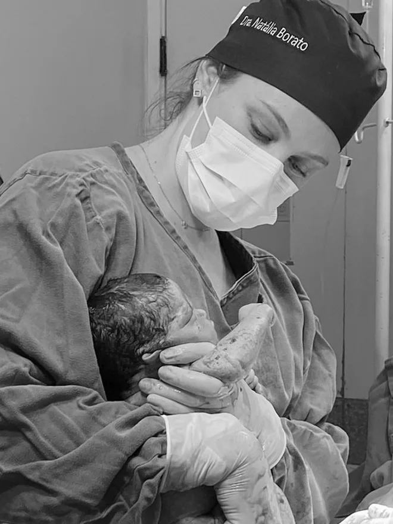

Consulta ginecológica
Rotina, prevenção e rastreio: colpocitologia, exame das mamas, orientação vacinal e investigação de queixas.
Ginecologia e obstetrícia
Da primeira consulta ao pré-natal e ao climatério: acompanhamento baseado em evidência, com tempo para ouvir e decisões tomadas junto com você.

Sobre
Sou a Natália, médica ginecologista e obstetra formada pela residência da Maternidade Cândido Mariano, em Campo Grande. Escolhi essa especialidade por acompanhar a mulher ao longo de toda a vida — da adolescência à menopausa — e por poder estar presente em um dos momentos mais marcantes de todos: o nascimento.
Minha prática combina condutas atualizadas com um jeito simples de explicar: você sai da consulta entendendo o que tem, quais são as opções e por que escolhemos determinado caminho. Nada de pressa, nada de decisão tomada sem você.
Natália T. Borato Maia
Atendimentos
Consultas presenciais com avaliação completa, exames de rastreio e plano de acompanhamento individual.
Rotina, prevenção e rastreio: colpocitologia, exame das mamas, orientação vacinal e investigação de queixas.
Acompanhamento da gestação do início ao pós-parto, com atenção a gestações de risco habitual e alto risco.
Escolha de método contraceptivo, inserção e retirada de DIU, implante e preparação para engravidar.
Primeira consulta sem constrangimento, ciclo menstrual, cólicas, acne, HPV e orientação em saúde sexual.
Manejo de sintomas, terapia hormonal quando indicada, saúde óssea, cardiovascular e qualidade de vida.
Investigação de dor crônica, sangramento anormal, SOP e miomas, com plano de tratamento individualizado.
Ultrassonografia na própria consulta Formação em ultrassonografia em ginecologia e obstetrícia e em ultrassonografia endovaginal pela FATESA/SBUS — imagem e avaliação clínica no mesmo atendimento, quando indicado.
Falar sobre o exameA consulta
Um roteiro previsível reduz a ansiedade e melhora o cuidado. É assim que trabalho.
Ver endereço e horáriosHistória clínica completa, sua queixa principal, hábitos, histórico familiar e o que você espera do acompanhamento.
Exame físico respeitoso, com explicação de cada etapa, e solicitação apenas dos exames que mudam a conduta.
Apresento as opções com riscos e benefícios claros. A decisão final é sua, com informação suficiente para decidir.
Retornos definidos, canal para dúvidas entre consultas e ajuste do plano conforme sua resposta ao tratamento.
✦
Informação clara é parte do tratamento. Quem entende o próprio corpo cuida melhor dele.
Dra. Natália T. Borato Maia
Artigos e mídia
Textos técnicos, materiais de educação em saúde e participações na imprensa sobre temas de ginecologia e obstetrícia.
Dúvidas frequentes
Não encontrou sua dúvida? Fale comigo no WhatsApp.
Pelo WhatsApp, com a secretaria. Você recebe as opções de horário, o endereço e as orientações de preparo antes da consulta.
A lista atualizada de convênios é informada no agendamento, junto com as condições de atendimento particular.
Documento com foto, carteirinha do convênio (se houver), exames recentes, lista de medicamentos em uso e a data da última menstruação.
Sim. A inserção é feita em consulta específica, após avaliação e orientação sobre os tipos disponíveis e o preparo necessário.
Sim, com plano de pré-natal combinado desde o início, definindo quais consultas e exames podem ser feitos próximos à sua casa.
Sim. Receitas, atestados e pedidos de exame são emitidos com assinatura digital válida em farmácias e laboratórios.
Contato
O agendamento é feito por WhatsApp. Respondemos em horário comercial.
Agendar pelo WhatsApp